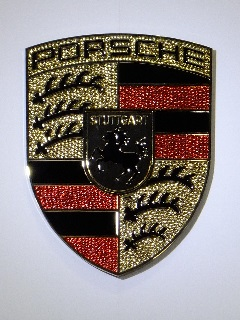

我ら機械同好会の有志たちの紹介です。
甲陽の選りすぐりたちを私、JP3BGYの独断と偏見を交えて紹介していきたいと思います。
それではやっていきましょう。
 モアイくん
モアイくん

生息地：アマゾンとも呼べる部屋の中
趣味：カメラ(主にNikon)、写真、まれに家電
Twitter:
@Moaikken(完全にカメラのことしかつぶやいていません)
苦手なもの：自己紹介,シャッターチャンスなどなど
使用ボード：Arduino Uno
同好会のリーダーっぽいモアイくんです。
去年の夏に発症したカメラの病気が2月ごろには第二ステージのNikonの病気にうつりました。
昼夜を問わずカメラのことしか考えていない今日この頃。
最新のレンズもいいけどニッコールオートが好み。
主にTwitterでカメラ好きの方たちと交流をしております。使用カメラはD7100,F501,F,NikomatELW。
同好会のことを書くと担当は「Arduinoを使っての作品作り」。
プログラミング,Web関連はYYTの足元に及ばず、自動車関連はわからない。レゴは覗いたこともない領域。
リーダーとしては没個性。それをいかしてか何なのか中立でまとめるリーダーを目指している。仕事自体は各部署に任せっきりです。
彼が書いてあるとおりこの同好会の長でとんでもないカメラヲタ。
しかも最近のデジタルカメラばかりではなく戦後まもなく出たようなフィルムカメラをも使いこなすという折り紙つき。
そんなわけもあって同年代より年上の人と話が合うという始末。
ただ、彼はカメラだけではなく音響機器なんかにも詳しいし機械関連ならほとんどが人並み以上にあるし
なにより同好会の長なので、まあ何かあれば彼に聞くのが正解であろう。
それでは次行ってみよう。
 JP3BGY
JP3BGY

出現地:兵庫県西宮市甲陽学院高等学校の校舎
職種:学生・無線家・変ジニア
Twitter:ないよー
Blog:
JP3BGYの技術者日記作品リンク:まだないよー
この同好会のもう一人の発起人であり事実上リーダーにして甲陽一番の変ジニア!!
(変人＋エンジニア、間違っても変態ではない)
この同好会のページをほぼ一人で立ち上げ機械関連の大会に何度も出場する実力者。
誰もが黙る(意味深)、JP3BGYとは俺のことだ!!!
あれ、、、何故か目から汗が、、、止まらない・・・!!
とまあ、中2じみた冗談はさておきどうも、JP3BGYです。
どんな時でも電子工作とパソコンのことを考えては興奮し、そして最近ではみんなが周りから離れていっているような人です。
自分で言うのもなんですが多分この学校で一番の技術者だと思います。
とは言えども機械ってプログラミングだけでもWeb関連、機械制作、アプリケーション、OS、セキュリティ、アルゴリズム、最近はスマートフォン用アプリケーションとかそれぞれが専門性が高いものになっていて、機械技術なら何でもできるわけではありませんがもし質問苦情挑戦状があれば受け付けます。
まあこれは自分なのでいちいち書く必要もないか。
ああ、もしパソコンやプログラミングやその他電子工作等機械の技術に詳しい人がいれば僕のスキルアップのために声をかけてくれれば幸いです。
もちろん挑戦状を叩きつけてくださっても構いませんよ?
では次だ、
 いおな
いおな

blog:
いおならぼ、Twitter:
@iona_legoflickr:
iona_lego種族:学生・アーティスト
好きな食べ物:麺類、寿司
苦手な食べ物:酸っぱい物全般
担当:レゴ（バイオニクル、ヒーローファクトリー、テクニック、マインドストーム）、DTM（勉強中のためあくまで予定）
2次元3次元どちらもOKな変態6・変人4の男♂。
機械に強いわけではなく、むしろ美術とか音楽とかの方が好き。
「誰得では終わらせない、人に楽しんでもらえる作品を作る」がモットー。
普段は広大なネットの海を漂っていたり漂っていなかったり。
自覚はしていないものの一般常識に欠けており、毎度何かやらかしてはJP3BGY君に罵られるも身に付くのはスルースキルのみ。
かっこよく言えば機械同好会屈指の異端児。または単にトラブルメーカー。
最近はVOCALOID音楽やデスクトップミュージック（DTM）の勉強を始めるなど、ますます独自路線に走っている。
彼はこの機械同好会で音楽(主にディスクトップミュージック)とレゴを担当しているイオナ君だ。
基本的にあまり喋らない人柄だがごくたまに核心を突くことがあるような人だ。
彼が作るレゴだが、皆が考えているような家やらドラゴンやらが出てくるものではなくテクニックやマインドストームというものだ。
えっ、何かって?それは文化祭に来るか彼の作品ページにいけば実物を見ることができるよ。
彼の作品は割と一般大衆向けっぽくて人気があるから何を見ればわからない人はぜひ彼の作品をみることをおすすめする。
では次、行ってみよう。
 班長H
班長H

好きな場所：自動車ディーラー、サーキット、自動車の博物館、etc...
出没地：上とほぼ同じでしょうか？
好きな会社：外国ではVWとポルシェ、国内では富士重工業（だと思う）
嫌いなもの：石油資源の枯渇化と価格の高騰、運転免許に年齢制限があり二輪免許も学校が禁止していて取得できないこと
最近の悩み：自動車関連のニュースがあると他の事ができなくなること、一度車について話し出すと止まらなくなること
車が大好きな班長Hです。
車については甲陽学院では一番と思っています（勝手に）。
好きな会社は、最初はベンツ、その後にホンダ。ベンツは手の届かない車なので諦めた気がします。ホンダがまたF1に参戦すれば好きになるかもしれません。
いつの間にかスバル以外が目に入らなくなり、水平対向エンジンに惹かれたころ、"Herbie"というビートルが主人公の映画を見てからVWとポルシェも好きになりました。
エンジンやミッションと言った機械関係のことも、一応勉強しています。
プログラミングは完全に専門外。ちなみに、ツイッターもブログもしていません。
彼はこの機械同好会で自動車班班長を務める班長Hだ。
その名前の通り彼ら自動車班(たった2人ですが)は大人もたまげるほどに車に詳しい。
車の車種はもちろん車の技術に関しても詳しくそれらの知識には実際に僕が彼らに協力を求めるほどすごいものを持っている。
また、彼いわく甲陽の人(中学高校を問わず)ならば誰でも自動車班は大歓迎だそうですのでぜひ入ってやってください。
それでは最後です。
班員O
一言で言うと…：大の車好き
好きな会社：スバル
好きな車：スバル車とパワーがある車、軽くて小回りの利く車
ツイッター：なし
ブログ：なし
スバリスト（スバル好きの人の事）の班員Oです。ガソリン車が好きで、ハイブリッドはあまり好きではありません。
マクラーレン・P1やラ・フェラーリ、ポルシェ918スパイダーなどのハイブリッドスーパースポーツを、これからの車のあるべき道と期待しています。コーナーと加速でモーターを使いブレーキで充電する使い分けがうまいです。環境に良いかは微妙ですが。
非物理部員で、車以外の機械については詳しくありません。
この同好会でもう一人の自動車班の班員Oだ。
彼と班長Hで毎月一回以上記事を書いている。
また文化祭では彼らが一番模造紙を書いているんだが・・・どうも一般大衆向けではないから一部の人しか見ないのが残念だ。
だが、彼らはそんな話のわかる一部の人のために頑張って記事を書いているんでもしわかる人がいればぜひ見てやってください。
ふむ、一部抜けているが彼らはまだ作成中ということなので大目に見てやってほしい。
それでは他の記事なんかもゆっくり見ていってください。
 about us
about us Members
Members Articles
Articles Works
Works Gallery
Gallery Blog
Blog